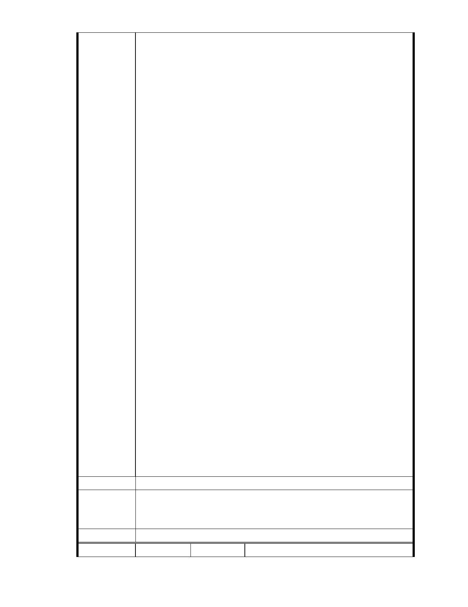

這些是血淋淋的教訓，難道這些還不能喚起政府單位與開發單位慈
濟的注意嗎？固然，地方政府經由整治大溝溪親水公園的大溝溪與米粉
坑溪流域保護區，以及改善通往大湖公園的明溝、暗渠，加上近幾年，
大雨並沒有直接下在大湖公園周邊，所以十年之間相安無事。
但是若是像今年降在高雄、蘇澳這樣的大雨，再次降臨到大湖公園
周邊，請問，誰敢保證，在幾分鐘之內，就因為大雨降臨，而互有吞吐
滯洪效果的大湖公園，以及大溝溪親水公園，與串連他們之間的，今天
慈濟變更案所在地的米粉坑溪保護區，有任何一地淹起來，而不能互相
吞吐，宣洩不及的事情，不會再度發生？
而今天要變更地目與使用的慈濟園區堵在大湖公園與大溝溪親水公
園之間，南北園區就像兩個大塞子，塞在中間，若是一旦蓋成志工大樓
或是兒童醫院，那麼，地基一打下去，連可以涵養水分的地底都沒有了，
請問，原來就是現在有水大湖的洪氾區的慈濟開發基地，能不淹起來嗎？
周邊的居民，能夠不受池魚之殃嗎？
十三、四年前，附近大湖里的居民就已經公投過，壓倒性的多數反
對慈濟開發水資源保護區，為何政府單位，又要再選舉前夕，接受開發
單位這一次捲土重來的土地變更案，知道嗎？大湖山莊街附近因為曾經
淹死過人，房價下跌了多少嗎？現在好不容易漲回來了，難道，我們大
湖居民的生命與財產，不能夠喚醒地方政府的注意嗎？11 月 27 日馬上就
要五都選舉了，難夠地方政府不要我們大湖居民，人民頭家的選票了嗎？
請地方政府單位直接駁回這一個變更案吧！讓我們人民頭家可以信任政
府。
開發單位慈濟行過何止百善、千善、萬善、為什麼一定要行此一惡，
拿多少善男信女的生命財產來開玩笑呢？為什麼一定要我這樣溫良恭儉
讓，平日只知為人隱惡揚善的人，一定要到這裡來宣揚你的惡呢？請大
家都肯定過的慈濟發揮大愛，主動撤回這一案吧！內湖二十幾萬居民都
會感謝你們的慈悲為懷的！
建 議 辦 法 同上
一、本案已進入都市計畫法定程序，後續將依都市計畫委員會審定內容
市府說明
為準。
二、相關陳情意見將納入本案審查人民意見，依法定程序辦理。
委 員 會 決 議 同編號 1。
編 號 15
陳情人 草山生態文史聯盟
- 21 -